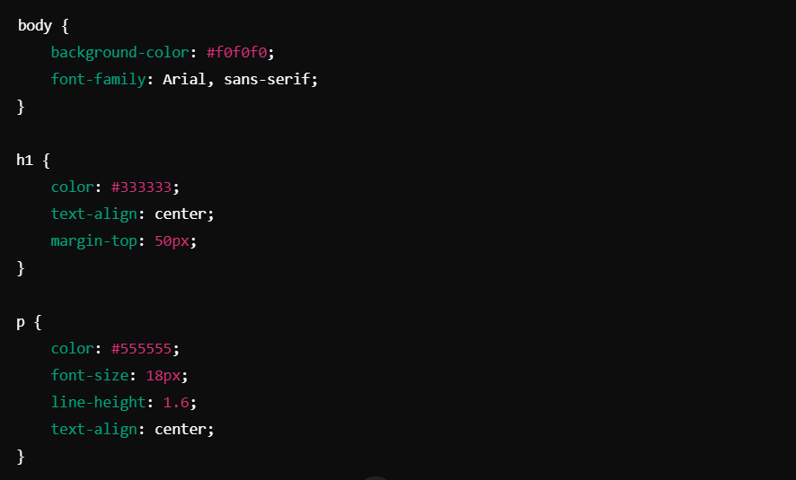

¿Qué es CSS?
CSS (Cascading Style Sheets) es el lenguaje que usamos para darle estilo a las páginas web. Nos permite modificar la apariencia visual del contenido, como colores, fuentes, márgenes y disposición de los elementos.
<h1>Título de nivel 1</h1>
Ejemplo: Título con estilo CSS
<div>: Contenedor de elementos
La etiqueta <div> se usa para agrupar otros elementos HTML, aplicando estilos a todo su contenido.
<div>Contenido dentro de un contenedor</div>
<span>: Estilo en línea
La etiqueta <span> se usa para aplicar estilos en línea a fragmentos de texto.
<span>Texto con estilo inline</span>
Texto con estilo inline<button>: Botón estilizado
La etiqueta <button> crea un botón que puede ser estilizado con CSS para mejorar su apariencia.
<button>Haz clic aquí</button>
<img>: Estilo de imágenes
La etiqueta <img> es utilizada para insertar imágenes, y podemos estilizarla con CSS, por ejemplo, aplicando bordes o redondeando sus esquinas.
<img src="imagen.jpg">
<p>: Párrafo con márgenes y relleno (padding)
La etiqueta <p> define párrafos en HTML. Con CSS, podemos ajustar el espaciado externo usando márgenes (margins) y el espacio interno usando relleno (padding).
<p style="margin: 20px; padding: 15px; background-color: lightcoral;">Este es un párrafo con margen y padding aplicados.</p>
Este es un párrafo con margen y padding aplicados. El margen separa el párrafo de otros elementos, y el relleno ajusta el espacio dentro del párrafo.